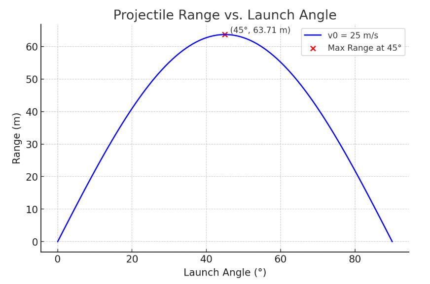

Problem 1
Investigating the Range as a Function of the Angle of Projection
1. Theoretical Foundation
Governing Equations of Motion
We begin by considering the motion of a projectile launched with an initial velocity \(v_0\) at an angle \(\theta\) with respect to the horizontal. Assuming no air resistance and a constant gravitational acceleration \(g\) acting downwards, we can decompose the motion into horizontal and vertical components.
Equations of Motion:
- Horizontal motion: $$ x(t) = v_0 \cos(\theta) t $$
- Vertical motion: $$ y(t) = v_0 \sin(\theta) t - \frac{1}{2} g t^2 $$
where:
- \(x(t)\) and \(y(t)\) are the horizontal and vertical positions at time \(t\), respectively.
- \(v_0\) is the initial velocity,
- \(\theta\) is the launch angle,
- \(g\) is the acceleration due to gravity.
Time of Flight and Range
To find the time of flight, we set \(y(t) = 0\) and solve for \(t\):
Solving for \(t\), we get two solutions: \(t = 0\) (the initial launch time) and \(t = \frac{2 v_0 \sin(\theta)}{g}\). The latter is the total time of flight, \(t_f\):
The horizontal range \(R\) is the horizontal distance traveled during this time, so we substitute \(t_f\) into the equation for \(x(t)\):
Using the trigonometric identity \(\sin(2\theta) = 2 \sin(\theta) \cos(\theta)\), we get the range formula:
This equation shows that the range is maximized when \(\sin(2\theta) = 1\), which occurs when \(2\theta = 90^\circ\), or \(\theta = 45^\circ\).
2. Analysis of the Range
Influence of Initial Conditions
- Initial velocity (\(v_0\)): The range is proportional to the square of the initial velocity. Increasing \(v_0\) significantly increases the range.
- Gravitational acceleration (\(g\)): The range is inversely proportional to the gravitational acceleration. Higher \(g\) reduces the range.
- Launch angle (\(\theta\)): The range is maximized at \(\theta = 45^\circ\), and it is symmetric around this angle.
Graphical Representation
Below is a Python script to visualize how the range changes with \(\theta\):
import numpy as np
import matplotlib.pyplot as plt
def range_function(theta, v0, g=9.81):
return (v0**2 * np.sin(2 * np.radians(theta))) / g
# Parameters
v0 = 25 # initial velocity in m/s
theta = np.linspace(0, 90, 100) # range of angles in degrees
g = 9.81 # gravity in m/s^2
# Compute ranges
ranges = range_function(theta, v0, g)
# Plot results
plt.figure(figsize=(8, 5))
plt.plot(theta, ranges, label=f'v0 = {v0} m/s')
plt.xlabel('Launch Angle (degrees)')
plt.ylabel('Range (m)')
plt.title('Projectile Range vs. Launch Angle')
plt.legend()
plt.grid(True)
plt.show()

3. Real-World Implementations
- Athletics: Projectile motion principles aid in refining release angles for disciplines such as archery, shot put, and football.
- Technical Design: Employed in weaponry, defense technologies, and formulating flight paths for spacecraft and guided munitions.
- Cosmic Studies: Utilized to simulate the courses of heavenly bodies and interplanetary expeditions.
4. Implementation
A computational simulation can provide a more in-depth analysis of scenarios involving air resistance. Incorporating drag force necessitates the use of numerical solution techniques (e.g., Runge-Kutta) for solving the resulting differential equations.
Illustration: Incorporating Air Friction
The dynamic equations considering drag \(F_d = -k v^2\) yield:
A numerical computation tool, such as Python's SciPy library, can be utilized to determine the solutions.
5. Limitations and Further Considerations
- Atmospheric drag: Results in asymmetry and shortens the projectile's reach.
- Irregular ground: Demands solutions for intricate boundary conditions.
- Wind influence: Alters the trajectory in unpredictable ways.
Future explorations might involve integrating machine learning methods to forecast projectile paths within complex environments.
Conclusion
The dynamics of projectile motion offer profound mathematical and physical insights. While the simplified model serves as a decent approximation, practical implementations necessitate numerical approaches to address non-ideal scenarios.